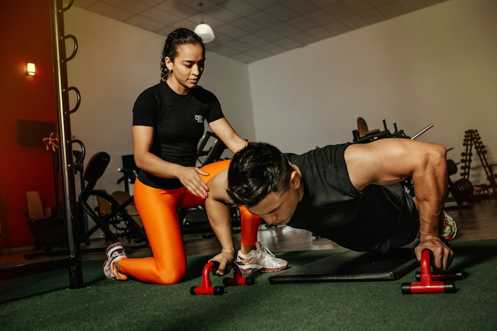
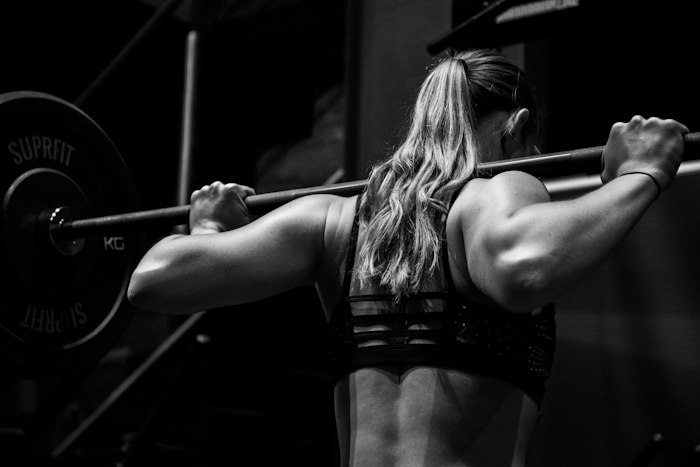
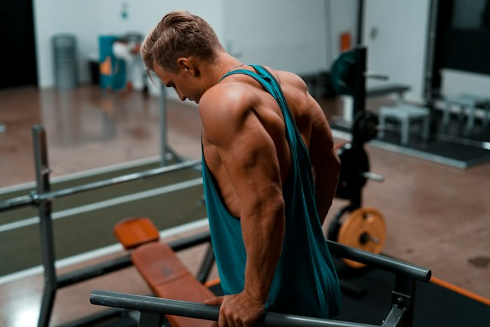
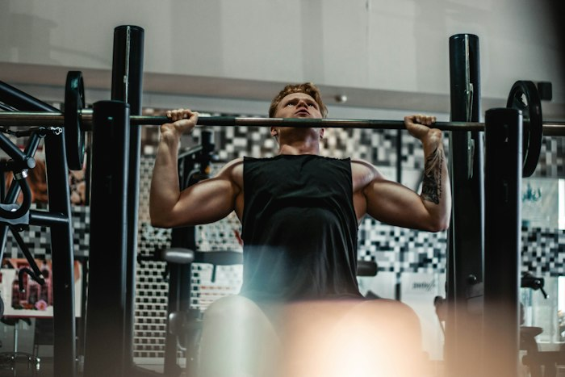
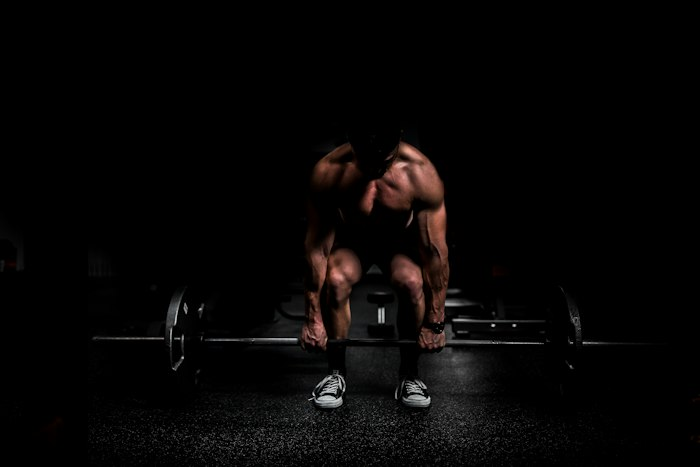

Primary Muscle Anatomy Guide
Welcome to the foundational anatomy curriculum. Every physical movement you produce in the gym is governed by antagonistic pairs of primary muscles. Understanding the structural orientation of these 6 key muscle groups allows you to stimulate maximum hypertrophy, prevent postural imbalances, and safely overload your compound lifts.
1. Chest (Pectoralis Major & Minor)
The chest constitutes the dominant pushing muscle of the upper body. Its fan-shaped fibers originate across the clavicle, sternum, and upper ribs, converging into the humerus. Training the chest requires understanding both pushing angles (incline, flat, decline) and horizontal adduction (fly movements).

Anatomical Subdivisions:
Composed of the Upper (Clavicular), Middle (Sternal), and Lower (Abdominal) heads.
Explore Targeted Chest Subdivisions →2. Legs (Lower Body Kinetic Chain)
The legs house the largest muscle groups in the human body, providing the metabolic engine for total-body hormonal release and raw foundational power. Developing complete legs demands balanced attention to anterior knee extensors (quadriceps), posterior hip hinges (hamstrings and glutes), and ankle stabilizers (calves).

Anatomical Subdivisions:
Composed of Quadriceps (4 heads), Hamstrings (3 heads), and Calves (Gastrocnemius & Soleus).
Explore Targeted Leg Subdivisions →3. Biceps (Biceps Brachii & Brachialis)
The biceps brachii sits on the anterior upper arm and is responsible for two primary biomechanical motions: elbow flexion (bending the arm) and forearm supination (rotating the palm upward). Accompanying the biceps is the deep brachialis muscle, which pushes the biceps upward to create noticeable arm thickness.

Anatomical Subdivisions:
Composed of the Long Head (Peak), Short Head (Width), and the deep Brachialis muscle.
Explore Targeted Biceps Subdivisions →4. Triceps (Triceps Brachii)
The triceps brachii accounts for approximately 60% of total upper arm volume. Acting as the direct antagonist to the biceps, its primary function is elbow extension (straightening the arm). Complete tricep development creates the classic “horseshoe” aesthetic and enhances pushing strength on heavy bench presses.

Anatomical Subdivisions:
Composed of the Lateral Head (Horseshoe), Long Head (Inner mass), and Medial Head (Lockout stabilizer).
Explore Targeted Triceps Subdivisions →5. Shoulder (Deltoid Complex)
The deltoid complex acts as a spherical muscular cap over the glenohumeral joint, allowing multi-planar articulation of the arm. Wide, sculpted shoulders broaden your upper frame, creating the coveted “V-taper” physique that visually narrows the waist.

Anatomical Subdivisions:
Composed of Anterior (Front), Lateral (Side), and Posterior (Rear) Deltoids.
Explore Targeted Shoulder Subdivisions →6. Back (Posterior Kinetic Chain)
The back consists of a complex network of muscles responsible for pulling motions, spine stabilization, and upright posture. Key players include the latissimus dorsi (“wings”) for back width, the trapezius and rhomboids for upper back thickness, and the erector spinae for foundational spinal durability.

Anatomical Subdivisions:
Composed of Latissimus Dorsi (Lats), Trapezius & Rhomboids (Upper Back), and Erector Spinae (Lower Back).
Explore Targeted Back Subdivisions →Advance to Targeted Muscle Breakdown
Now that you understand the 6 primary muscle groups, view their detailed muscle subdivisions and see each targeted muscle pictured clearly.
View Targeted Muscle Groups →